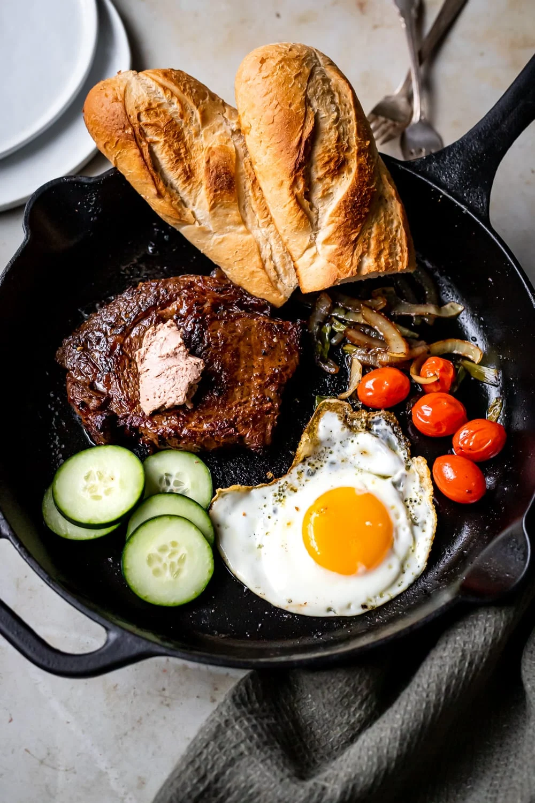

Cheesecake

Description
Equipment
Ingredients
Marinade
- 1 ribeye steak
- 1 tbsp oyster sauce
- 1 tbsp soy sauce
- 1 tsp granulated sugar
- 2 cloves garlic smashed
- 1 tbsp olive oil
Other Ingredients
- 2 tbsp butter
- 40 g yellow onion thinly sliced
- 2 tbsp green onion
- 5 cherry tomatoes
- 1 egg
- 5 slices cucumbers
- 1 tbsp pate
- 1 baguette
Directions
-
Combine all the ingredients for the marinade in a Ziploc bag (plastic bag). Shake it until everything is mixed and the steak is coated. Set aside at room temperature to marinate for 30 minutes.
- While the steak is marinating, cut your onions and green onions.
- Heat 1 tablespoon of oil in a cast iron pan over medium high heat. If you don’t have a cast iron, a non stick pan should work as well. Place the steak in the pan and let it cook until it gets a good sear (3-5 minutes).
- Flip the steak over. Add the butter. Spoon the melted butter over the steak. This will help cook the steak further and give it a nice sear. Once the steak has a nice sear on the second side, make sure to sear all the other sides too. The steak should be a medium rare to medium at this point. If you want to cook the steak more, put the steak in the oven for a few minutes.
- Once the steak is cooked to your preferred doneness, place it on a cooling rack to rest. This ensures that all the juices don’t flow out when you cut into it.
- Next, cook your onion and green onion. Throw them into the cast iron and cook until the onions are translucent. Set aside.
- Next add the tomatoes and cook for a few minutes. Set aside.
- Lastly, fry the egg. Set aside.
- Drain excess oil from the pan and place the steak, onion, green onion, tomatoes, and egg back into the cast iron. Add the cucumbers, pate, and baguette.
- Serve the bò né in the cast iron!